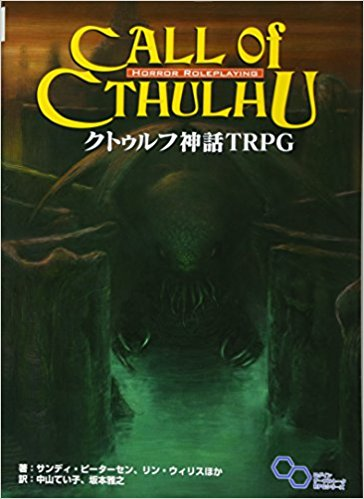

TRPGとは
テーブルトーク・ロールプレイングゲームの略。ゲーム機を使わず紙と鉛筆、サイコロを使い、
参加者と会話をしながら進行の主軸となるシナリオ（ビデオゲームで言う物語のこと）を楽しみます。
TRPGには様々な種類があり、プレイするにはそのタイトルのルールブックが必要です。
タイトルの種類
TRPGにはいろいろなタイトルがありますが、今回はもっとも有名なものを紹介させていただきます。
クトゥルフ神話TRPG

このようにクトゥルフ神話TRPGは、矮小な人間である探索者たちが、様々な宇宙的恐怖に晒されつつも生き残ることを目的として足掻く様を楽しむホラーTRPGとなっている。
| ジャガイモ | 3個 |
|---|
| ニンジン | 1本 |
|---|
| 豚ブロック | 300g |
|---|
| カレー粉 | 1箱 |
|---|